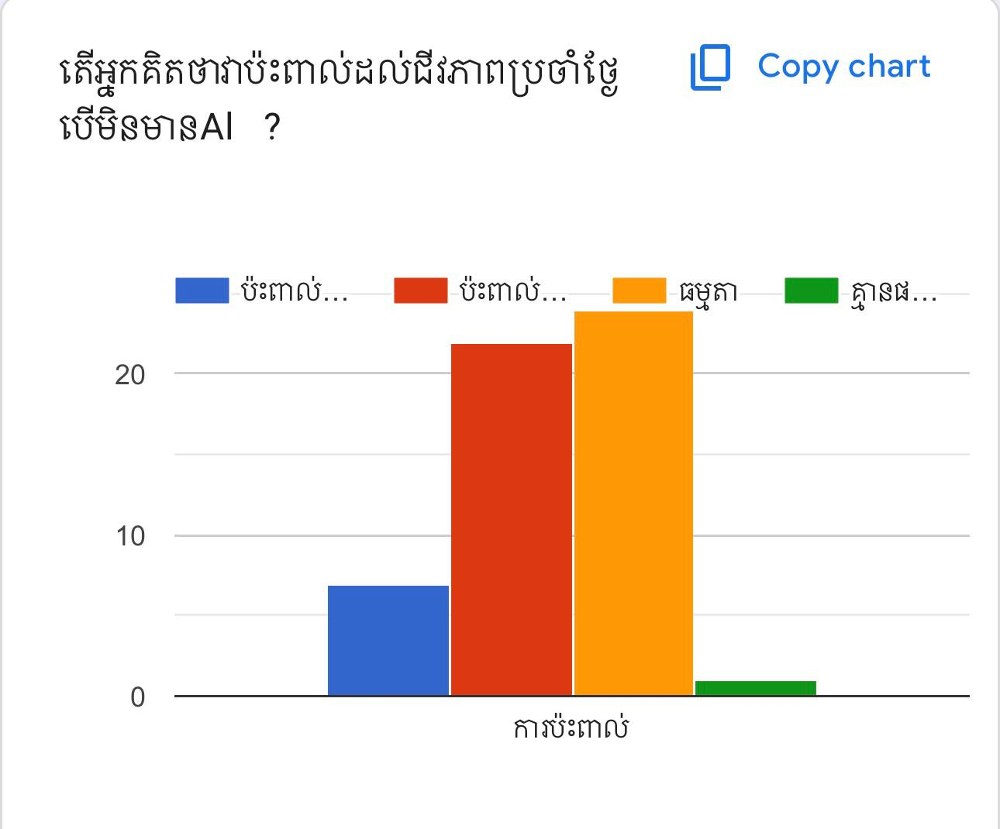

1. ការពឹងផ្អែកលើ AI ច្រើនពេក នឹងបង្កផលប៉ះពាល់អ្វីខ្លះ?

2. តើកំណើននៃការប្រើប្រាស់AIច្រើននឹងធ្វើឱ្យមនុស្សបាត់បង់ការគិតដែរឬទេ?

3. តើអ្នកគិតថាAIមានសារៈសំខាន់សម្រាប់ជីវិតប្រចាំថ្ងៃដែរឬទេ?

4. តើAIបានផ្តល់ភាពងាយស្រួលដល់អ្នកអ្វីខ្លះ?

5. តើអ្នកគិតថា AI មានផលវិបាកលើមនុស្សយ៉ាងដូចម្តេច?

6. តើអ្នកគិតថា មនុស្សនាសម័យ ឥឡូវប្រើប្រាស់Aiច្រើនដែរឬទេ?

7. នៅពេលជួបបញ្ហា អ្នកជ្រើសរើសវិធីណាមុនគេ?

8. តើអ្នកគិតថាការកែប្រែទម្លាប់ពីពឹងផ្អែកលើ AI គឺជារឿងដែលងាយស្រួលដែរឬទេ?

9. តើអ្នកពឹងផ្អែកលើបញ្ញាសិប្បនិម្មិត (AI) ប៉ុន្មានដើម្បីធ្វើការសម្រេចចិត្តដោះស្រាយបញ្ហា ឬ សកម្មភាពរបស់អ្នក។

10. តើចម្លើយដែលAi បានផ្តល់ឱ្យអ្នក អ្នកយល់ថាចម្លើយនោះល្អិតល្អន់ដែរឬទេ?

11. ដើម្បីកាត់បន្ថយកំណើននៃការប្រើប្រាស់Aiតើយើងត្រូវធ្វើដោយរបៀបណា?

12. តើគួរតែផ្លាស់ប្តូរឬទេ បើមនុស្សពឹងផ្អែក (AI) ច្រើនពេក?

13. តើអ្នកគិតថាវាប៉ះពាល់ដល់ជីវភាពប្រចាំថ្ងៃបើមិនមានAI?
